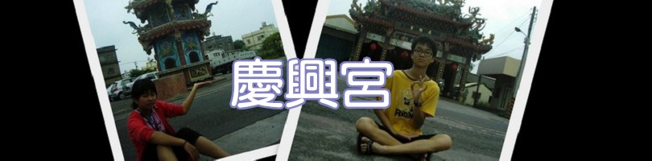
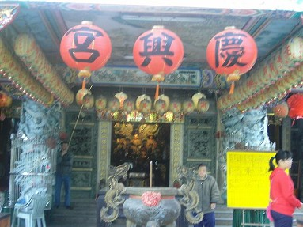
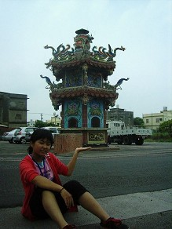

慶興宮: 建於八十二年卄三壬申年動土三月廿八起基，八十三年十一月乙亥年初七子時安座，農曆三月二十三日千秋生日、農曆四月二十六日五穀先帝生日，訓練一群媽媽們 抬神轎，媽媽們穿的衣服、鞋子、褲子、帽子等等都是廠商提供的，慶興宮是社區內最大的一座廟宇，前面的大廣場提供社區居民辦婚喪喜宴及聚會活動的地方。  這張是慶興宮給人第一印象的模樣，它給我的第一個感覺是很安詳寧靜，給我的第二個感覺是很熱鬧，因為平常時間都是很安靜的，如果有什麼特別的節日的話，大家都會在這間廟宇辦活動表示當天是重要的日子，所以它給我兩種不同的感覺，也有不同的享受。
這是裡面的模樣，這裡面讓我覺得有一種無法形容的感受，想要知道那是什麼感覺的話就來這間廟宇吧！主要得神明有註生娘娘、福德正神、天上聖母、五穀先帝，如果你（妳）要祈求保平安或是生小孩的話，可以來這裡拜拜喔。   參觀完這間廟後，忍不住的起了玩心，就拍了幾張搞笑照，希望沒有對神明有不敬的地方。 去完這趟後，才發現自己其實並不是很了解這間廟，再進去的那剎那才知道一間廟不是只有神明就算是廟了，一間廟要是沒有人去 管理、愛護它就不是一間廟。每一間廟宇要是沒人去管理、愛護它，就算它是一間非常壯觀的廟，但它不會讓我覺得是一間真的可以保佑我們的廟；如果它是有人去 管理、愛護的話，就算是間小廟，也會讓我覺得可以保佑我們。所以一間廟是不可缺少那些人的，這是我對每一間廟的想法。
以上的介紹希望大家會喜歡～ |
彰化縣立線西國民中學、未來想像與創意人才培育計畫：黃巧婷 、丁于容 、姚家臻 、顏劭勳製作 |